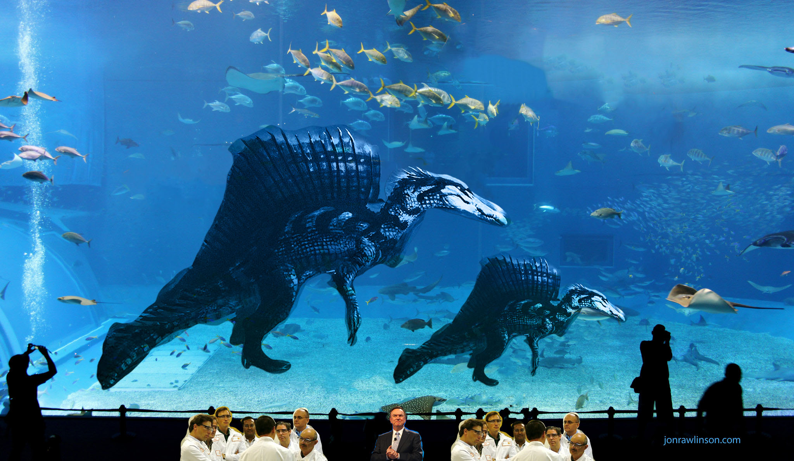

We managed to create more than one specimen. The subjects have been proven to be able to thrive in both salt and fresh water enviroments.Both seem to prefer fresh water than salt water. This is a truly remarkable discovery, Dr.Clovis has truly outdid himself. We have had both subjects housed in a huge enclosure about a mile long. We tried to sperate both of them but that proved to be a very bad idea. 99 almost tore a handler's arm off after he was being taken away from his sibling for his flu shots. A huge pool of water sits in the center of the enclosure. Inside houses many fresh water fish for the subjects to hunt for as well as a viewing glass on the sides of the pool for us to view them.
Many tall red woods dart about the enclosure. Birds come and go as the ceilling is open for a more natural feel. 99 and 98 seem to both enjoy the birds a lot. Both would look up and chirp with the birds as if communitcating with them.Both are very docile and we can even meet them face to face and pet them. They're more friendly with the female staff and but reluctent with the male staff. The only exception being Mr. Typhon himself. Further study required.
